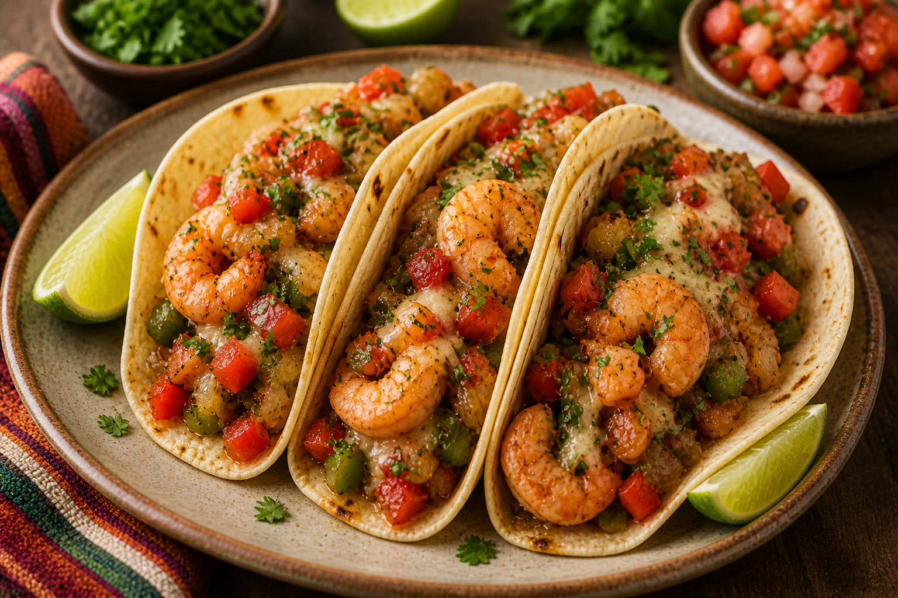

home
Tacos Gobernador

Description
A flavorful Mexican seafood dish made with juicy shrimp, sautéed peppers and onions, melted cheese, and warm corn tortillas. Tacos Gobernador are rich, savory, and packed with fresh, vibrant flavors in every bite.
Ingredients
- 3 tablespoons salted butter
- 1/3 cup diced onion
- 1 serrano pepper, diced
- 3 cloves garlic, minced
- Salt and ground black pepper to taste
- 3 Roma tomatoes, diced
- 1 pound raw shrimp - peeled, deveined, and cut into small pieces
- 1 lime, juiced
- 4 teaspoons bacon drippings, divided
- 8 (8 inch) corn tortillas
- 1 1/2 cups shredded Oaxaca cheese
Steps
- Melt butter in a skillet over medium-high heat. Add onions and serrano and cook until onions are soft and translucent, 4 to 5 minutes. Add garlic and cook until fragrant, about 1 minute. Season with salt and pepper. Add tomatoes to the skillet and cook until they have softened, about 3 minutes. Add shrimp and lime juice. Cook until shrimp turns pink, 2 to 3 minutes. Season with more salt and pepper. Remove from heat.
- Divide shrimp mixture into 8 equal portions. Set aside.
- Melt 1/2 teaspoon bacon drippings in a cast iron skillet over medium-low heat. Place 1 tortilla on bacon drippings. Add 1 1/2 tablespoons cheese and 1 portion shrimp mixture to one side of the tortilla. Fold over and cook until tortilla is semi-crisp and cheese has started to melt, 3 to 4 minutes. Flip taco onto other side and cook to desired crispiness, 2 to 3 minutes more. Repeat with remaining tortillas.